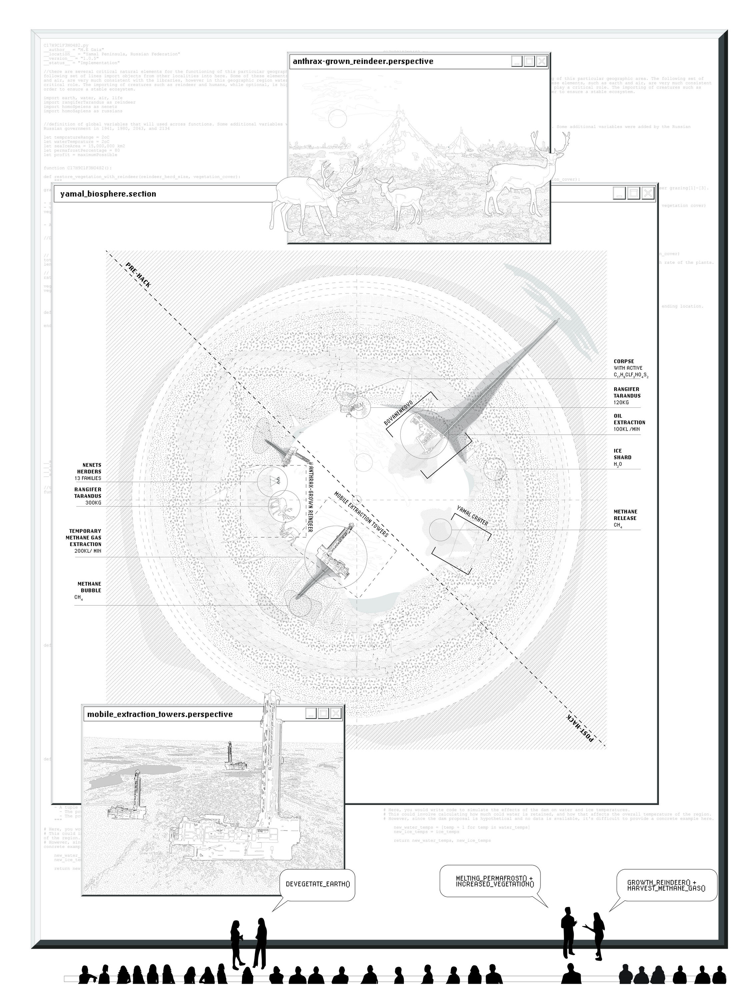
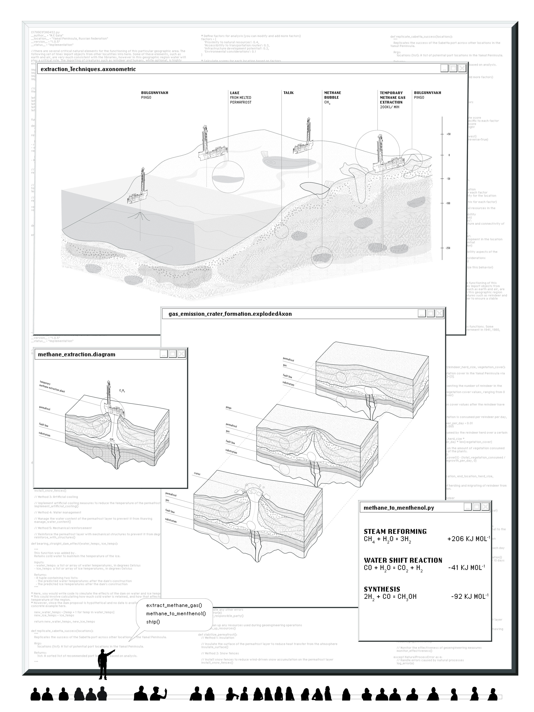
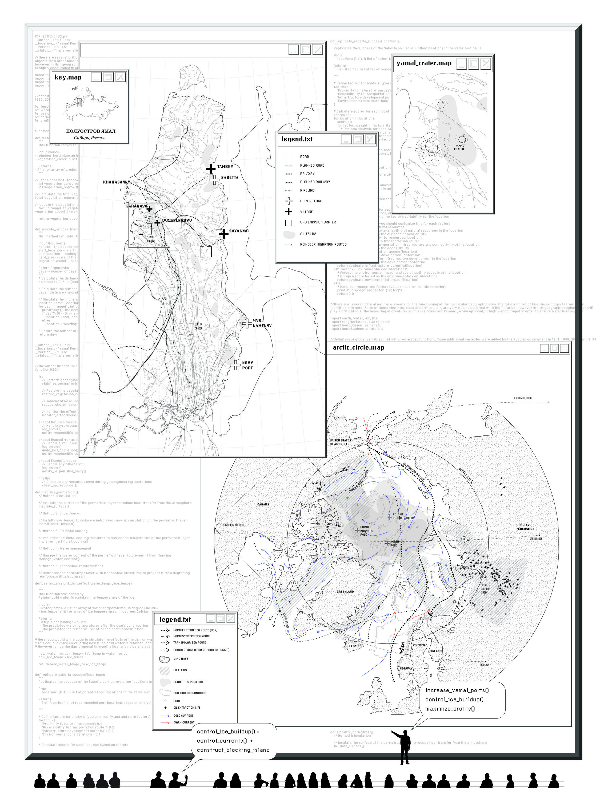

2023
DAILY PAPER
get your morning news on the throne
This group project was spurred byt he challange to design a machine from scratch. We decided to make a plotter that would print today's headline on toilet paper. The rest was history.
CONTEXT
How to Make Almost Anything with Professor Neil Gershenfeld
SOFTWARE
Rhino, 3D Printing, Illustrator, Python
COLLABORATORS
Alexander Htet Kyaw, Charles Perot Janson, Danny Griffin, Diana Mykhaylychenko, Ekanem Okeke, Mateo Fernandez Feraud, Merve Akdogan, Nasibe Nur Dundar Arifoglu, Niklas Hagemann, Se Hwan Jeon, Shonit Nair Sharma, Simon Lesina Debiasi, Suwan Kim, Yitong Tseo, Zhixing Chen
ROLES
Idea generation, Code to retreive headlines from the New York Times, Diagrams and Documentation
DISSEMINTION
MIT Museum's After Dark

Plating- an act performed on any meal as it is placed on the dish. With centuries of tradition and history, the art of food presentation has undergone much exploration and experimentation yet has failed to address the spatial nature of food display. Plating, a form of microarchitecture, has implications beyond the borders of the dish, and has spatial and behavioral effects on the consumers. This experiment examines the development of a plating technique addressing gastronomic proxemics via robotic actuation of the food. The meaningful act of combining artificial robotic elements with natural food elements the project is able to implement proxemic-based responses to the unique human relationships to food. This leads to the ability to map proxemic concepts onto non-living elements such as cuisine.



